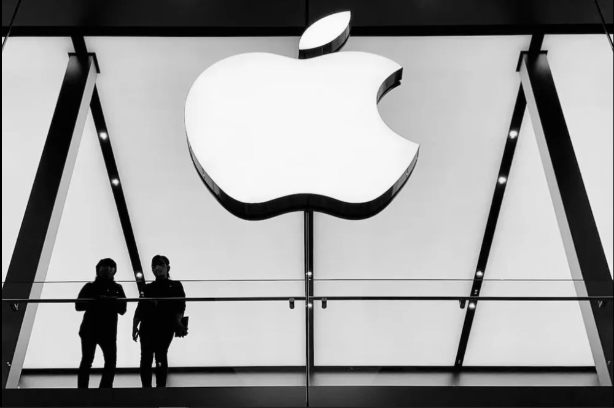

Apple bate novo recorde e alcança US$ 3 trilhões de valor de mercado
Analistas ouvidos pela agência Reuters acreditam que a expectativa pela redução da taxa de juros nos EUA e o otimismo do mercado com o potencial da inteligência artificial têm favorecido a dona do iPhone.
Por g1
30/06/2023 10h22 Atualizado há uma semana

A Apple bateu seu próprio recorde na manhã desta sexta-feira (30) e atingiu o valor de mercado de US$ 3 trilhões, segundo o índice Nasdaq.
O bom resultado surge um dia após o iPhone, seu principal produto, completa 16 anos.
Na quinta-feira, a empresa já se aproximava do valor, sendo avaliada em torno de US$ 2,97 trilhões, de acordo com dados da Refinitiv.
O valor de mercado das ações da Apple ultrapassou brevemente os US$ 3 trilhões em negociações no dia 3 de janeiro de 2022, mas encerrou a sessão ligeiramente abaixo desse patamar.
Os ganhos mais recentes nos papéis da empresa mais valiosa do mundo seguem a forte recuperação de vários pesos pesados de tecnologia em Wall Street este ano, impulsionados pela expectativa de que o Federal Reserve está se aproximando do fim de sua campanha de aumentos de juros e pelo otimismo com o potencial da inteligência artificial.
"Não houve realmente nenhuma informação fundamental nova que pudesse apoiar o movimento das ações", disse Thomas Martin, gestor sênior de portfólio da Globalt Investments à agência de notícia Reuters.
A aproximação da Apple à marca dos US$ 3 trilhões segue o lançamento, em 5 de junho, de um caro dispositivo de realidade aumentada, sua aposta mais arriscada desde a introdução do iPhone.